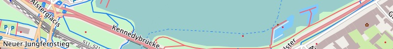
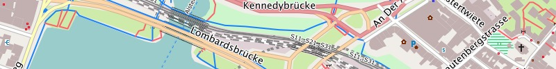

Basisdaten:
Die Freizeitkarten (Ausgabe 14.01) basieren auf den
OpenStreetMap-Daten vom 19.01.2014
. Vielen Dank an alle Mapper die Daten hierzu beigetragen haben.
Ergänzungen / Veränderungen in der Ausgabe 14.01:
- allgemeine Verbesserung der Kartendaten (durch das OSM-Projekt)
- allgemeine Verbesserung der Kartendarstellung von:
- Feuchtgebieten
- Wattflächen
- Yacht-Häfen
- Korrektur Textausgabefehler
Nächste Ausgabe:
Die nächste Ausgabe der Freizeitkarten erscheint voraussichtlich Mitte März 2014.
Aktuelle Karten:
Die aktuellen Karten sollten über die jeweiligen Länder / Regionen heruntergeladen werden. Die Links dazu (z.B.
Deutschland,
Österreich,
Schweiz, ...) finden sich in der Menüleiste. Erfahrene Benutzer können auch diesen
Link auf das Kartenverzeichnis verwenden.
Ältere Karten:
Ältere Karten stehen unter diesem
Link auf das Archiv noch einige Zeit zur Verfügung.
Support-Forum:
Im Geoclub gibt es ein Support-Forum zu den Freizeitkarten, wo viele Kartennutzer und auch die Kartenbauer Hilfestellungen geben:
Freizeitkarte Support-Forum
